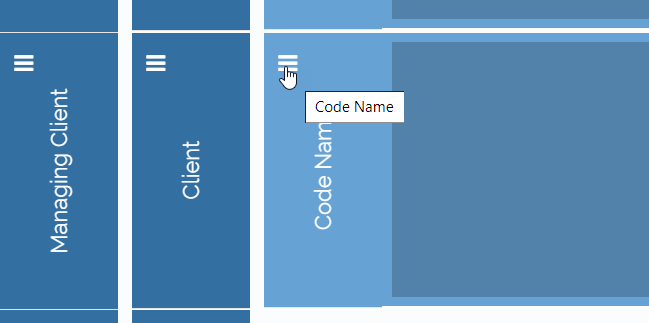
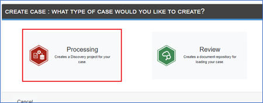
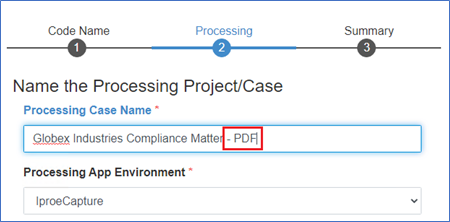
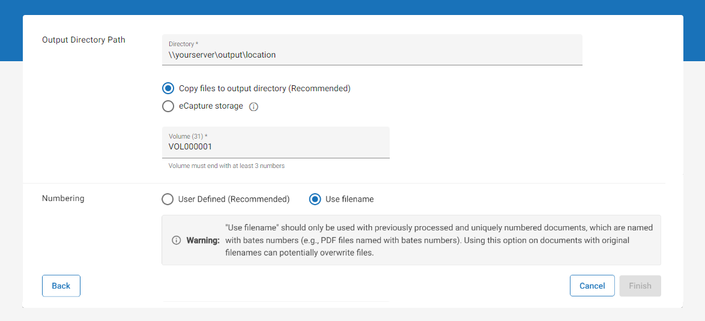
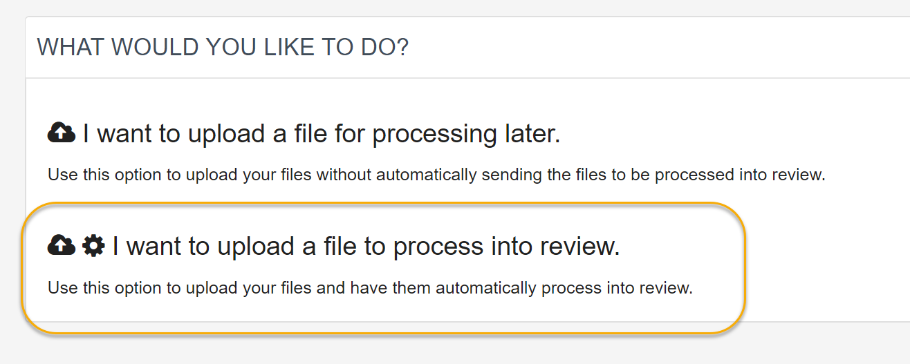

Note: This procedure is assuming you already have a processing and review case created through
As an administrator of
|
|
Note: This procedure is assuming you already have a processing and review case created through |
Log in to
Click the hamburger icon under Code Name to add a new Case to an existing Code Name Group.


Create a new Processing Case with an identifying suffix of ‘ – PDF’


Your Code Name group should now consist of two processing cases and one review case.

Open Case Management and locate the Processing case for which you would like to create an import series.
Click the hamburger icon corresponding to the required case.
In the menu that displays, select Case Settings. The work area opens. Select the Load to Review tab near the top.
On the Review Importing page, select Create Import Series.
On the first step of the Import Series wizard, define a name for the new Import Series, such as "Bates PDF."
|
|
Note: Ensure the Set as Active Series option is selected. When active, the import series is able to promote ingested documents into the selected Review case. When inactive, the import series is "turned off" and any customization defined in the series is not used during processing. |
Proceed through the steps of the Import Series wizard, customizing as needed. See
On the fourth step of the wizard, ensure you select the Use filename option.

When all options have been defined, click Finish to create the Import Series.
After the above configurations have been completed you are ready to ingest the data through Self-Service.
Open the
On the Self-Service page, click I want to upload a file to process into review.

Select your new PDF processing case.
Select Custodian > click Go.

Related Topics